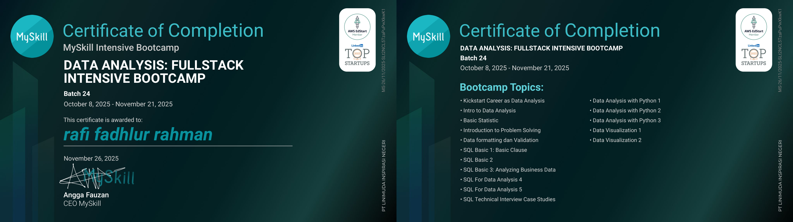
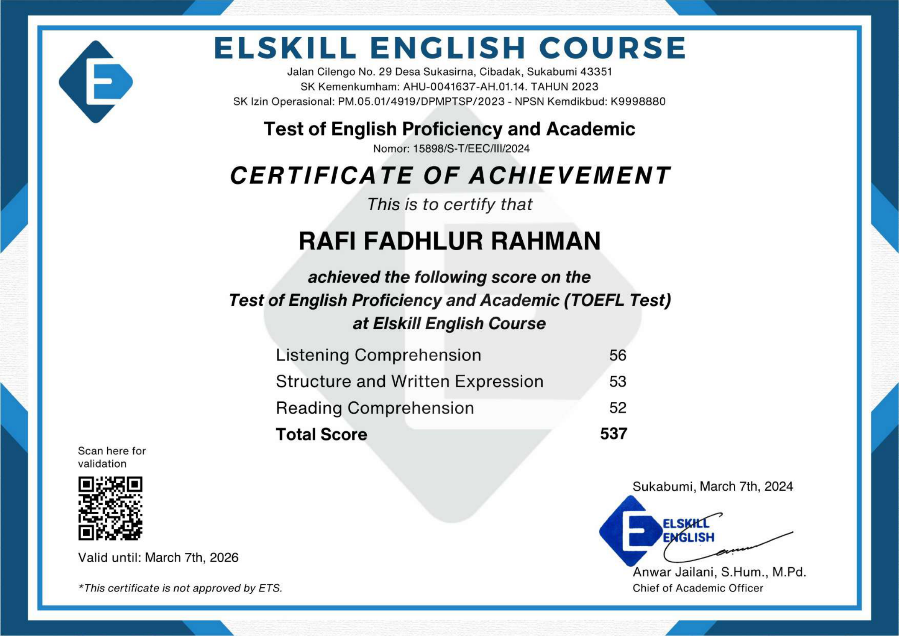
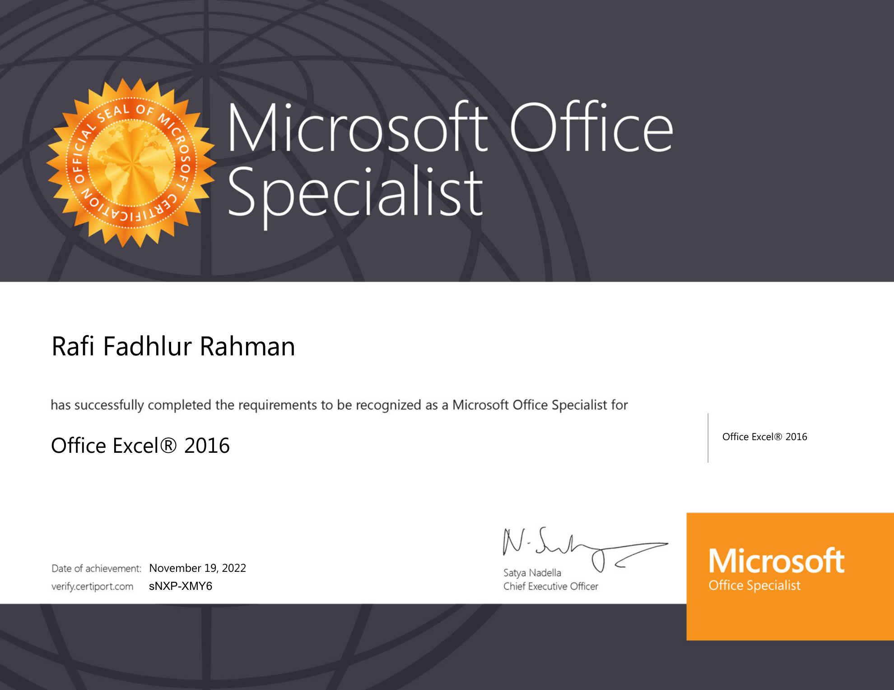

Saya merupakan lulusan Teknik Informatika yang memiliki ketertarikan pada bidang Data Analytics, Database Management, dan Web Development. Saya senang mempelajari teknologi baru serta memiliki kemampuan dalam mengolah data menjadi informasi yang bermanfaat untuk mendukung pengambilan keputusan.
S1 Teknik Informatika
2020 - 2024
Badan Pengembangan Teknologi dan Informasi (BPTI) Uhamka
Merancang dan mengelola sistem basis data menggunakan phpMyAdmin. Menulis query Python untuk optimasi pengambilan data yang mendukung operasional sistem informasi kampus.
Karang Taruna RT
Bagian Seksi Keamanan sebagai anggota saya menjalankan tugas yang sudah dutentukan berjalan sesuai dengan yang sudah direncanakan

MySkill Intensive Bootcamp - Batch 24

Sertifikat kemampuan Bahasa Inggris.

Office Excel 2016